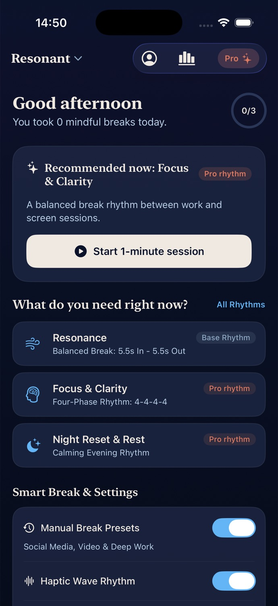
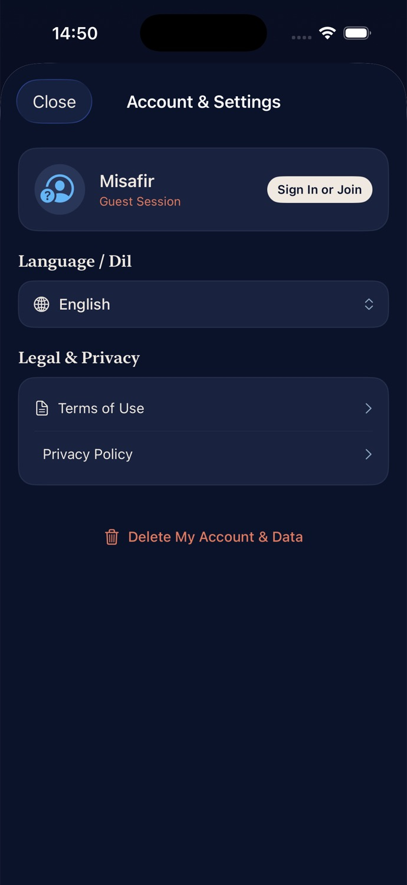
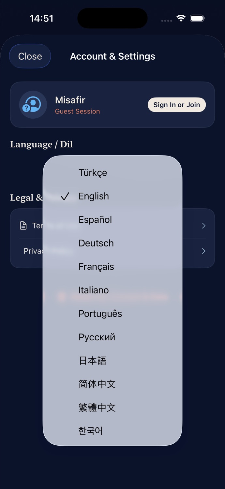

≈
Rezonans
Dengeli ekran molası: 5,5 saniye nefes al, 5,5 saniye nefes ver.
Temel ritim · ÜcretsizEkran yorgunluğu, odak dağınıklığı ve yoğun anlar için bir dakikalık rehberli nefes molaları.
Görsel, sesli ve dokunsal yönlendirmeler nefesi takip etmeyi kolaylaştırır.
Dengeli ekran molası: 5,5 saniye nefes al, 5,5 saniye nefes ver.
Temel ritim · ÜcretsizYoğun çalışma arasında düzen kuran dört aşamalı 4-4-4-4 ritmi.
ProGünün hızını azaltmaya yardımcı olan sakin 4-7-8 akışı.
ProToplantı veya odak oturumu öncesinde yaklaşık iki dakikalık hazırlık.
ProAkıllı mola önerileri, günlük hedefler ve rahat okunabilen bir arayüzle ekran başındaki ritmini koru.



Resonant bir tıbbi cihaz değildir. Rahatsızlık hissedersen seansı durdur ve normal nefesine dön.